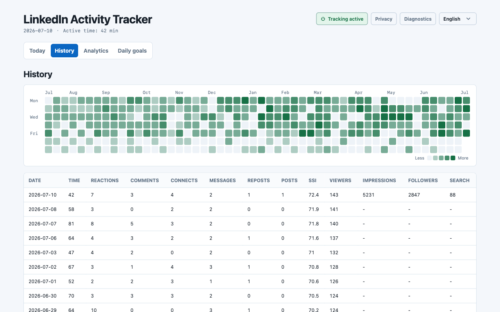

Consistency is a game. Play it.
SSI rewards people who show up every day. The tracker makes showing up visible — and a little addictive.
Set your daily reps
Pick daily targets for reactions, comments, connections, messages, and posts. Every action you take on LinkedIn fills the bar in real time — do the reps, clear the day.

Keep the streak alive
A year-long heatmap shows every day you showed up — and every day you didn't. Once a green streak builds, you won't want to break it.

Watch your SSI respond
The tracker snapshots your Social Selling Index every time you open the SSI page and lines it up with your daily activity — so you can see which habits were in play in the weeks your score climbed.
SSI is LinkedIn's own 0–100 score. The tracker shows activity and score side by side; it never modifies anything.
Social Selling Index
Three months of daily reps — illustrative data